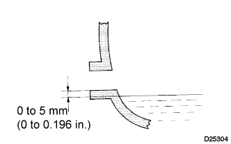

MANUAL TRANSMISSION SYSTEM > ON-VEHICLE INSPECTION |
| 1. INSPECT TRANSMISSION OIL |
 |
Park the vehicle in a level place.
Remove the transmission filler plug and gasket.
Check that the oil level is within 5 mm (0.196 in.) of the lowest point of the transmission filler plug opening.
If the result is not as specified, add transmission oil.
Inspect for oil leaks when the oil level is low.
Install a new gasket and the transmission filler plug.